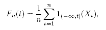
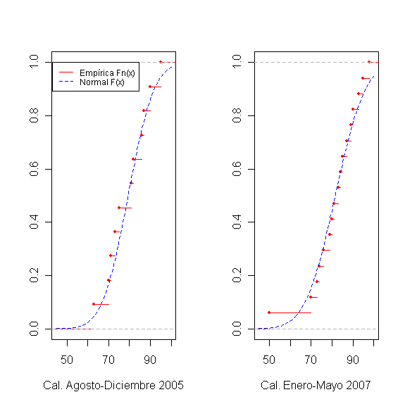
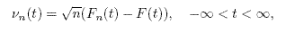
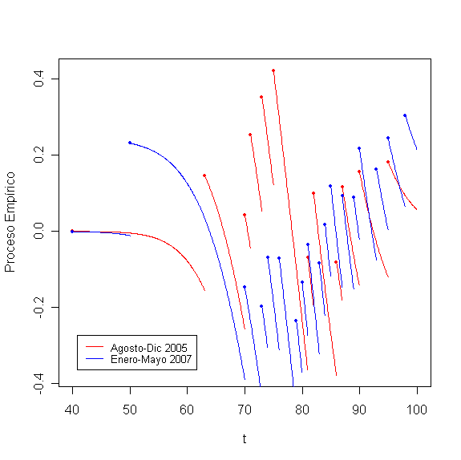

Las aplicaciones más populares de la Teoría de Procesos Empíricos son las Pruebas de Bondad de Ajusto: el Estadístico de Kolmogorov-Smirnov y la Prueba Ji-cuadrada.
Para comprender qué es un proceso empírico necesitamos recordar a la Función de Distribución Empírica:

es decir, Fn es el número promedio de observaciones hasta el valor t.
Para ilustrar el comportamiento de la función de distribución empírica Fn construimos esta función con las calificaciones finales obtenidas en el curso de Probabilidad y Estadística en los semestres Agosto-Diciembre 2005 y Enero-Mayo 2007. En la gráfica, la función empírica corresponde a la función escalonada (color rojo). Note que esta función es continua por la derecha (punto rojo) y con límites por la izquierda. Además, comparamos a la función empírica con la función de distribución acumulativa F de la distribución Normal (línea punteada azul), donde la media y la desviación estándar fueron estimados con los datos obtenidos. Para probar si la aproximación es significativa necesitamos aplicar alguna prueba de bondad de ajuste, la cual discutiremos más abajo. Estas gráficas se obtuvieron con la función ecdf() del paquete estadístico R.

Cada semestre (muestra) obtendríamos una función similar, continua por la derecha y con límites por la izquierda. Estos proceso se estudian en la Teoría de Procesos Empíricos como trayectorias (funciones) de este tipo y al espacio de todas estas trayectorias se le denota con la letra mayúscula D. También se les conoce como trayectorias o funciones cadlag, del francés continue à droite, limite à gauche. Así, para estudiar estos procesos necesitamos aplicar teoría de probabilidad en espacios de dimensión infinita, donde toda una trayectoria o función corresponde a un punto muestral en el espacio de probabilidad correspondiente.
Cuando el número de estudiantes se incrementa (tiende a infinito) estas trayectorias empíricas se aproximan a las de un Proceso Gaussiano. Para explicar con mayor detalle a lo que nos referimos vamos a denotar al Proceso Empírico de la siguiente forma,

donde Fn es la distribución empírica y F es la distribución real de los datos. La siguiente gráfica muestra las trayectorias discutidas anteriormente como trayectorias de un proceso empírico. Escribimos un rutina en R para graficar las dos trayectorias. Observe que pertenecen al espacio de funciones D.
